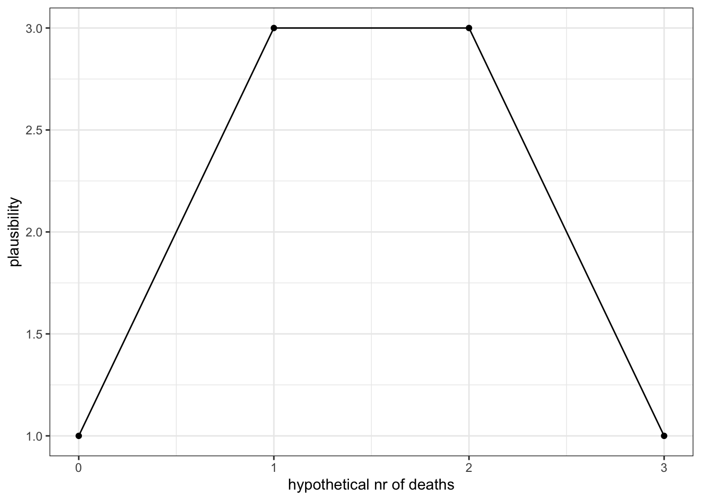
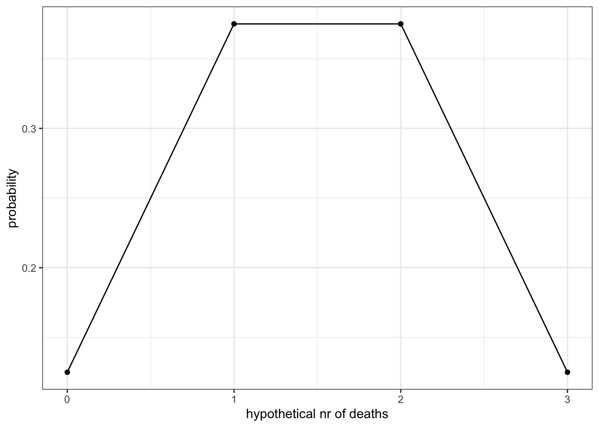
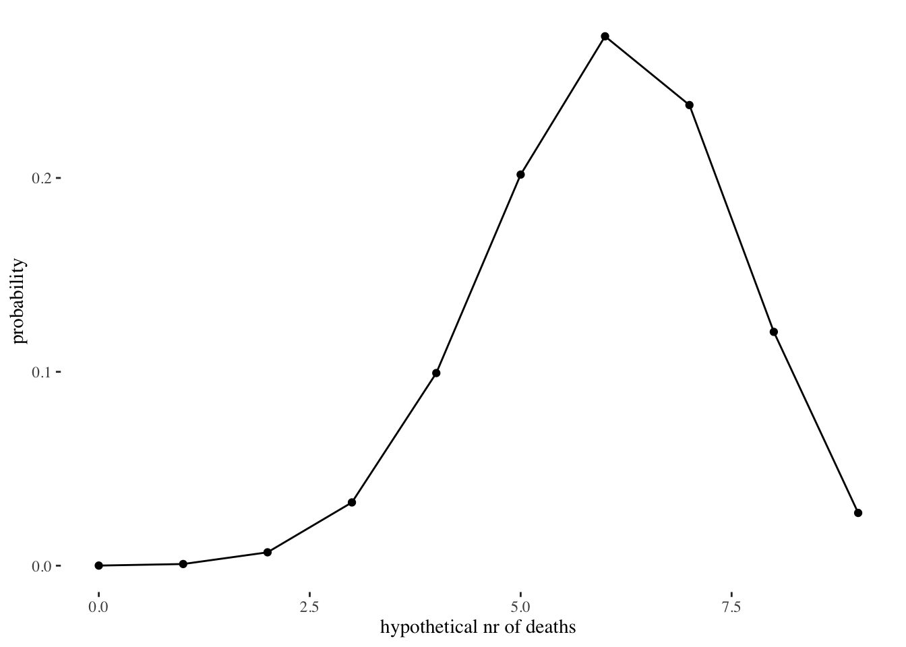
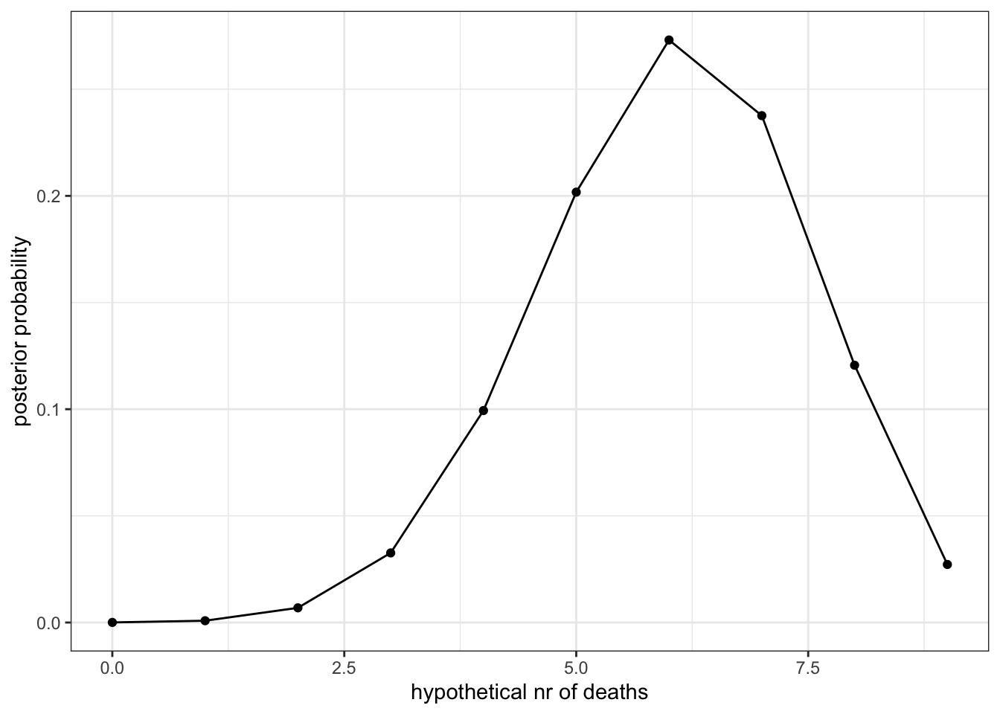
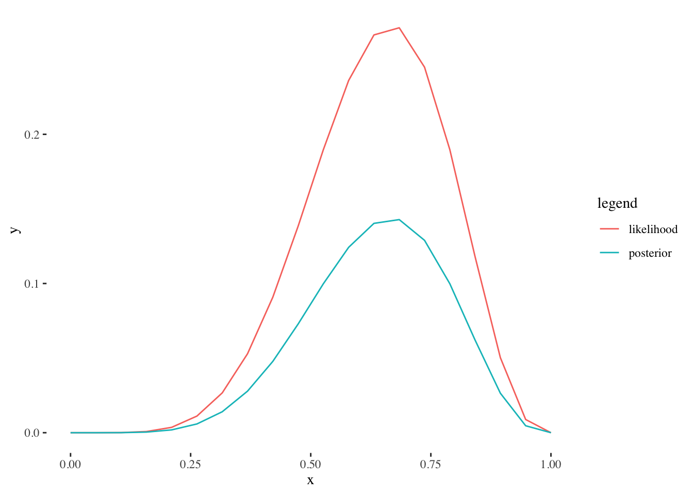
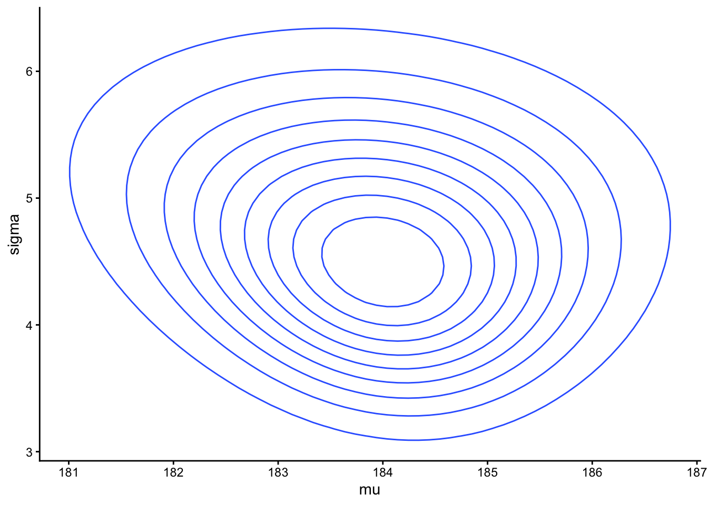

In frequentist statistics the main workflow is something like this:
Decide on the stopping rules and statistical tests that will be used, write a pre-registered analysis protocol.
Do a power analysis to determine optimal sample size N for finding significant effects
Collect the sample of size N (no more, no less). There can be no peeking at data, unless pre-specified in step 1, until the full sample is collected. The sample needs to be analysed together. Ideally the experiment is randomized and blinded, so the researcher does not know, which is the experimental group and which is the control group.
Run the pre-specified statistical test on pre-specified variables, which have been normalized and transformed according to the pre-specified protocol.
Check the test assumptions (normality, linearity, constant variance, etc.) by running additional tests on your data and on the fitted model.
If these assumptions are satisfied, interpret the p value as significant or not.
In general, a frequentist analysis should be completely pre-registered to avoid multiple testing problems that arise largely (but not solely) because of dichotomizing continuous evidence by the statistical significance criterion.1 This avoidance of “researcher degrees of freedom”, which can destroy the long-run quality control properties of frequentist tests, makes the analysis very rigid, and often equally frigid, or incapable of reacting to different-than-expected results. It is a serious mistake to suppose that frequentist requirements to statistical inference, which come from the need to fix the long-run frequency of type 1 errors, reflect how real scientists do real scientific inference.
In Bayesian statistics we do not care about stopping rules and instead of a power analysis we might simulate realistic-looking data and try to analyse these, to see whether the models and algorithms to fit them work well enough for these kind of data. This will also double as a power analysis as one can find an optimal sample size that gives sensible estimates. Also, we do not pre-specify, which models we will use on our data, as we will build several bespoke models depending on the data that we eventually get, so we can compare the models and their fits, and try to learn from them as a group. Instead of formally checking model assumptions, we rather generate simulated data from the fitted models and compare with actual data, to see, which aspects of our data are well represented in the model structure, and which ones are not. This approach is a major benefit of the Bayesian approach. As a whole, Bayesian modeling is much more flexible, both in terms of model structures and in how we work with the models, in that it tries to mirror the scientific process, where we gradually learn from data, and from our mistakes, to build better experiments and better ways of analysing their results.
A simplified Bayesian procedure:
model data as likelihood, by using an appropriate probability distribution that reflects the data generating mechanism.
model additional information as prior, by using a probability distribution that best allows to describe your prior beliefs.
use a Bayesian procedure to get a posterior. These days, instead of trying to calculate from the Bayes theorem directly, which can be overwhelming computationally, various MCMC approximations are used.
compare the model fits, and the posteriors that we got from different models
As needed, modify your models to achieve better fit and more realistic model-generated data. Then repeat the cycle, until you are satisfied.
interpret the posteriors in scientific context, make counterfactual predictions from the fitted model.
It should be noted that at the end of the day both Bayesian and frequentist statisticians want the same thing. They want to use the fits of statistical models in formulating scientific conclusions. The numerical outputs of statistical models themselves are not it. They have to be interpreted in non-mathematical and out-of-the-model contexts. However, by artifice and by tradition the two great traditions of statistics go about their business in quite different ways.
In frequentist statistics it is usually the raw effect sizes and the p values that get interpreted. In Bayesian statistics, they are the shrunk effect sizes (we will learn soon, what this means) and the assorted credible intervals. In frequentist inference usually a single model is interpreted per effect, while in Bayesian inference often several models are interpreted together. In frequentist inference the statistically non-significant effects are often not interpreted at all (this is not what frequentist theory proposes, but rather an unfortunate historical accident), in Bayesian inference all effects are interpreted together (remember that the law of total information is a law of logic; you do not want to go around, breaking these!).
6.1 4.1. Fitting the Binomial data model
Mortality of a disease is 50% and we have 3 patients. How many of them are likely to die? We have 2 pieces of data (mortality rate p = 0.5 and N = 3) and a 4-member sample space (0 dead, 1 dead, 2 dead, and 3 dead). We start by enumerating all logically possible scenarios (d - dead, a - alive)
d d d
d a d
d d a
a d a
a a d
a a a
a d d
d a a
Kui P(dead) = 0.5, then by simple counting we get that:
0 dead - 1,
1 dead - 3,
2 dead - 3,
3 dead - 1
Thus we have 1 + 3 + 3 + 1 = 8 possible futures that divide between the 4 hypotheses. This means that for each member of the parameter space we know the probability of its realization (P(1 death) = 3/8, etc.). It is this knowledge we now turn into a likelihood function.
Show code
# Parameter space: all possible futuresx <-seq(from =0, to =3)# Likelihoods for each x value, # or P(deaths I x)y <-c(1, 3, 3, 1)ggplot(data=NULL, aes(x, y))+geom_point()+geom_line()+xlab("hypothetical nr of deaths")+ylab("plausibility")+theme_bw()

One death and two deaths are equilikely and one death is three times as likely as no deaths (or three deaths). Likelihood simply tells for each number of deaths, how likely is this outcome, given the mortality figure that we state.
Now we demonstrate the same using the binomial distribution model. The only difference is that now we get on the y-axis normalized probabilities.
Show code
y <-dbinom(x, 3, 0.5)ggplot(data=NULL, aes(x, y)) +geom_point()+geom_line()+xlab("hypothetical nr of deaths")+ylab("probability")+theme_bw()

How many dead when we have 9 patients and mortality rate is 67 percent?
Show code
x <-seq(from =0, to =9)y <-dbinom(x, 9, 0.67)ggplot(data=NULL, aes(x, y)) +geom_point()+geom_line()+xlab("hypothetical nr of deaths")+ylab("probability")+ ggthemes::theme_tufte()

Next we add to the likelihood a flat prior and use the Bayes theorem.
Show code
x <-seq(from =0 , to =9) #parameter space: nr of deathsprior <-rep(1 , 10) # flat prior# Compute likelihood at each value in gridlikelihood <-dbinom(x, size =9, prob =0.67)# Compute product of likelihood and priorunstd.posterior <- likelihood * prior# Normalize the posterior, so that it sums to 1posterior <- unstd.posterior /sum(unstd.posterior)ggplot(data =NULL, aes(x, posterior)) +geom_point() +geom_line() +xlab("hypothetical nr of deaths") +ylab("posterior probability")+theme_bw()

Now its time for a shift of perspective. We want to estimate the true mortality rate.
data: 6 dead out of 9 patients.
parameter to estimate: the mortality rate (p).
sample space: real numbers between 0 and 1.
We can still use binomial likelihood. dbinom() has 3 arguments, nr of events, nr of tries and probability of events. Again, we have two of them as data and one as the parameter whose value we want to estimate. We use the flat prior again. As there are Inf number of members in \(\Omega\), we cheat a little and calculate for the grid of 20 evenly spaced parameter values.
Show code
# grid: mortality at 20 evenly spaced probabilities from 0 to 1x <-seq(from =0 , to =1, length.out =20)# priorprior <-rep(1 , 20)# likelihood at each value in gridlikelihood <-dbinom(6, size =9 , prob = x)posterior <- likelihood * prior /sum(likelihood * prior)a <-tibble(x=rep(x=x, 2),y=c(likelihood, posterior),legend=rep(c("likelihood", "posterior"), each=20))ggplot(data=a) +geom_line(aes(x, y, color=legend))+ ggthemes::theme_tufte()

Our posterior sums to 1, but thanks to flat prior its shape is the same as the likelihood.
Lets do this datapoint-by datapoint, so that n = 1.
Now zero mortality and 100 percent mortality are both logically impossible. The most likely value for mortality is 2/3 or 75 percent.
6.2 4.2. Normal data model
Richard McElreath:
There are an infinite number of possible Gaussian distributions. Some have small means. Others have large means. Some are wide, with a large \(\sigma\). Others are narrow. We want our Bayesian machine to consider every possible distribution, each defined by a combination of \(\mu\) and \(\sigma\), and rank them by posterior plausibility. Posterior plausibility provides a measure of the logical compatibility of each possible distribution with the data and model. … The parameters to be estimated are both \(\mu\) and \(\sigma\), so we need a prior \(Pr(\mu , \sigma)\), the joint prior probability for all parameters. In most cases, priors are specified independently for each parameter, which amounts to assuming \(Pr(\mu, \sigma) = Pr(\mu) Pr(\sigma)\).
How does one make a US president? Lets start by generating some heights of presidential candidates. We assume that human growth is a deterministic process that depends on a complex mix of many genetic and environmental factors. But we really do not understand this process well enough to directly use it to generate prospective heights of future presidents. We think that human height is approximately normally distributed (conditional on sex, age, etc.), so we could model presidential heights as a normal distribution where each possible height is given a probability of occurring. Now, we could generate new heights from this stochastic model proportionally to these probabilities. But before we do this, we have to fix the shape of the normal distribution so that we know the relevant probabilities. This can be done by fixing the values of two parameters of the normal distribution, \(\mu\) and \(\sigma\). Luckily we have data on the heights of the last 12 presidents:
As the parameter \(\mu\) is identical to the expected value, i.e. the mean of the normal distribution and \(\sigma\) to standard deviation (SD), we can simply calculate those and then use these numbers to generate new heights.
Data mean is:
Show code
(Mean <-mean(heights$value))
[1] 184.5833
and SD is:
Show code
(SD <-sd(heights$value))
[1] 3.964807
Predict 4000 new heights and calculate standard deviation:
Show code
set.seed(1)rnorm(4000, Mean, SD) %>%sd()
[1] 4.10711
This procedure is not ideal, though, as it does not take into account the fact that our estimates of \(\mu\) and \(\sigma\), calculated from limited data, are not precisely true for the full population of US presidents, including the future ones. So on top of the randomness in predicting new presidents that comes from our imperfect knowledge of the mechanisms that generate human heights we must model the uncertainty that comes from imperfect data. How can we do this? When modelling this 2nd order epistemic uncertainty we will to end up not with point estimates of \(\mu\) and \(\sigma\), but probability distributions for \(\mu\) and \(\sigma\) values. This way we are not predicting new heights from a single fixed normal distribution, but rather from many different distributions, where each is parametrized by a plausible combination of \(\mu\) and \(\sigma\) values (each of these combinations is supported by the data and by our prior knowledge of plausible presidential heights).
Show code
pres_m <-brm(data = heights, formula = value~1, file="models/pres_m")pres_posterior_sample <-posterior_samples(pres_m)set.seed(1)rnorm(4000, pres_posterior_sample$b_Intercept, pres_posterior_sample$sigma) %>%sd()
[1] 4.546833
Now the standard deviation of predicted presidents heights is slightly larger (by 0.44 cm), reflecting the extra uncertainty. Note that the model pools both kinds of uncertainties so that we cannot re-separate them in later analysis.
Next we fit this model the old-fashioned way, using the Bayes theorem with grid approximation.
Basic Bayesian inference goes like this:
What is the sample space of true mean heights? From -Inf to Inf. Silly, but convenient, if we want to use the normal data model (likelihood).
How likely it is for each possible height to be the true average? The answer to this question is the likelihood, which depends on our sample data and on the model we choose to represent this data with. Here we model the likelihood as a normal distribution, whose mean equals the sample mean and whose standard devation equals the sample sd/sqrt(N), or SEM (standard error of the mean).
Next step is quantifying prior beliefs, independent of sample data, about the mean height. Our prior for the mean is also normal distribution with \(\mu = 175.4\) (the mean height of US males), sd = 3 (picked so, that a mean height of 181 cm for the presidents would still be fairly possible). And the prior for \(\sigma\) is also normal with \(\mu = 5.2\) (the SD for the heights of the general US male population) and sd=1 (so that true SD values between about 3 and 7 cm would be possible enough). This is a rather informative prior.
Likelihood models data as a probability distribution.
Likelihood does not have to be normal.
Prior is your belief about the parameter value, modeled as a probability distribution.
Prior does not have to be normal.
Likelihood and prior(s) do not have to be represented by the same distribution.
Posterior is narrower than prior and likelihood. This reflects the combining of information in the likelihood and prior. Bayes theorem is provably the most efficient way of doing this.
Now, lets go on. Next item in the menu is the grid method for posterior in 2D. Instead of multiplying likelihoods, we will add log-likelihoods (which is mathematically the same thing).
The model is:
\[height_i \sim normal(\mu, \sigma)\]
\[\mu \sim normal(175.4, 5)\]
\[\sigma \sim normal(5.2, 1)\]
Where the 1. line is the likelihood, containing two parameters, and the next 2 lines are priors for each parameter.
i is index for heights, which means that the model assumes that each individual height comes from the same normal distribution.
6.2.1 prior predictive simulation
Here we calculate the posterior solely on the prior. As we add no likelihood, the data has no influence on the posterior – only the prior does.
We use two different prior combinations: one is informative (the black line in the figure) and another one is weakly informative (red), meaning that it carries no useful biological information, but nevertheless gives a lot more weight to postive values and values < 4 meters (thats right - this prior assumes that 4-meter mean height is possible). Currently, weak priors are all the rage, because they make model fitting by MCMC methods easier, while requiring minimal scientific input. Lets hope that this situation is about to change in favour of strong scientifically informed priors!
6.2.2 Calculating the 2D posterior
The posterior is a joint distribution over all parameters in the model. If we have 2 parameters, then we have a 2D posterior. If we have 200 parameters, then we have 200D posterior. We can always collapse the posterior to a desired 1D view for inspection (see below).
Show code
# d_grid contains all possible combinations (10 000) of mu and sigma values. n <-100d_grid <-crossing(mu =seq(from =180, to =190, length.out = n),#crossing() expands the table to cover all possible combinations.sigma =seq(from =1, to =8, length.out = n))#grid_function generates a density value from a normal function, #whose x is a vector of presidents height and mu and sigma are plucked from d_grid.#sum() in the log-scale is prod() in the linear scale. In each row of d_grid #we multiply likelihoods (actually, sum log-likelihoods) for each data point, using#different combinations of mu and sigma to model the normal distribution.grid_function <-function(mu, sigma) {dnorm(heights$value, mean = mu, sd = sigma, log =TRUE) %>%sum()}d_grid <- d_grid %>%mutate(log_likelihood =map2_dbl(mu, sigma, grid_function),# map2_dbl() takes each mu and sigma pair in d_grid (row-wise) and puts it into the grid_functionprior_mu =dnorm(mu, mean =175.4, sd =5, log =TRUE),#for each value of mu (one in each row) we calculate normal density from prior distr.prior_sigma =dnorm(sigma, mean =5.2, sd =1, log =TRUE),#for each value of sigma we calculate normal density from prior distr. for sigmaproduct = log_likelihood + prior_mu + prior_sigma,#sum() in the log-scale is product in the linear scale. probability =exp(product -max(product)))#product - max(product) mirrors into negative scale, which after exp() becomes probability scale.#probability vector contains the posterior probabilities across mu and sigma. d_grid %>%ggplot(aes(x = mu, y = sigma, z = probability)) +geom_contour() +theme_classic()

This 2D posterior is drawn as a 3D surface, where the third dimension is posterior probability. 3 In the center of the contour is the peak of the posterior distribution. This is, by the way, a bivariate normal distribution.
6.2.3 Sampling from the posterior – 1D posteriors for mu and sigma.
I am sampling randomly while weighting on probability, so that mu values with higher posterior probability are more likely to end up in the sample. From such random samples of mu and sigma (the posterior samples) we can plot the posteriors:
Even with only 11 datapoints the prior is so much wider than likelihood that it has minimal influence on the posterior.
6.2.6 Some things to notice
As the priors are true probabilities that sum to one, and the likelihoods are not, we can run our models on either priors and data, or on priors alone, but never on data alone. Running a model on priors alone can be a good idea, if you want to know, how much your data influences the model fit. When you have little data and strong priors, this is the thing to do.
Each fitted model with k parameters gives you a k-dimensional posterior (this is slightly more complicated with multi-level models), which we flatten into k side-by-side variables in the posterior samples table. This means that we have to treat each row of this table as a single unit, when we use them in further calculations. In each row there is one plausible combination of k parameter values – if you mix the values between rows, this might no longer hold.4
As we fitted the full model (both mean and sd), we can generate in silico data from it, using the full posterior samples, and compare these generated data with the actual data that was used to fit the model. By this we mean that all Bayesian models are generative. This comparison is called a posterior predictive check and it is a very convenient method to get a first impression on how well your mathematical model recaptures the physical data generating mechanism in the nature. PP check is a major advantage of Bayesian modeling, as the usual frequentist models that estimate the mean, do not estimate the sd. Such frequentist models are not generative.
The more data you have, the narrower the likelihood; the more scientific information you put into the prior, the narrower the prior (usually, but not always). Whichever of the two is narrower, will influence the posterior more. The posterior will always be narrower than likelihood and prior. A lot of data swamps the prior, making it unimportant in respect of the posterior. Conversely, with a small sample the prior can have a major influence on the posterior.
In Bayesian estimation, posterior is everything. It contains all of the information about the estimates that is contained in the fitted model. There is nothing in the model about the parameter values that is not covered in the posterior. Every fitted model gives you a posterior for every parameter in the model. This is it. All you have to do, is to study those posteriors, and to make calculations with them to get new estimates. For example, we will soon learn, how to get the estimate for a group mean by adding another group mean and the effect size. These calculations are done at the level of posterior samples, the idea being that you do not want to lose information about estimation uncertainty. Also, with many likelihoods you can calculate straight from the posterior either the mean aor the median (and often the mode), all with appropriate credible intervals. This is not something you can easily do in frequentist statistics.
While multiple testing, narrowly understood, is not a problem for the Bayesian, false alarms are. The currently favored Bayesian mitigation of false alarms is multilevel modeling.↩︎
This is Bayesian method in a nutshell: at each parameter value (x) we multiply the likelihood (y_lik) with the prior (y_pr), thus combining our prior knowledge with the data and the data model. Knowledge (prior and data) in – knowledge (posterior) out.↩︎
geom_contour() visualizes 3D surfaces in 2D. To specify a valid surface, the data must contain x, y, and z coordinates, and each unique combination of x and y can appear once.↩︎
With the normal likelihood it will actually hold, because the variation of \(\mu\) and \(\sigma\) are independent of each other, but this is not so with most other likelihoods.↩︎